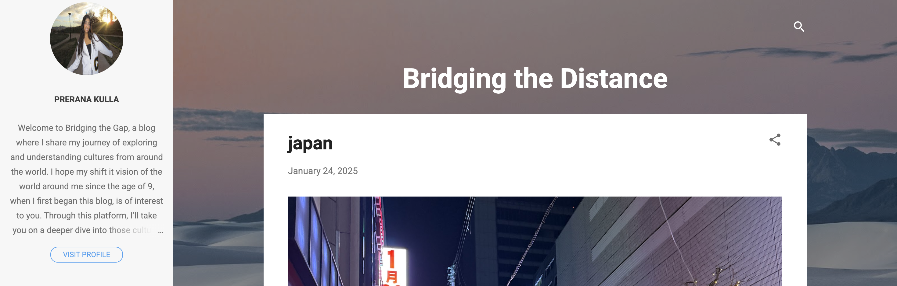
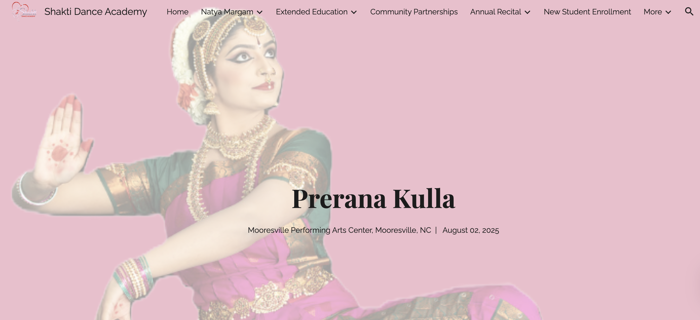

Featured Projects
Endeavors in Women's Menstrual Health
I grew to love Western North Carolina during my final two years of high school, and when Hurricane Helene hit Morganton, NC, I stepped up to support my community in a time of need. Inspired by my experiences in India, I founded the Menstrual Movement to address period poverty, leading donation drives that provide essential hygiene products to local shelters and schools. Through this work, I also strive to normalize conversations around menstrual health and break longstanding stigma.
Read more
Bridging the Distance: My Travel Blog
The fear of forgetting my 2015 trip to India stayed with me and I wanted nothing more than to preserve those moments with family and friends. At just nine years old, I wrote my first travel blog post, and since then, I’ve made it a tradition to document every new journey I experience.
Read more
Bharatanatyam Arangetram Recital
Click below to learn more about my Margam—the artistic journey behind my Bharatanatyam performance. Through storytelling, I embody and share the lessons of deities such as Ganesha, Krishna, Shiva, and Lakshmi, as the Margam unfolds from invocation to a powerful climax.
Read more